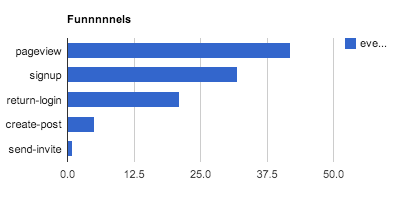

<section>
  <h3>Default Pie chart</h3>
  
  <div id="pie" class="chart"></div>
</section>

<section>
  <h3>Default Bar chart</h3>
  
  <div id="bar" class="chart"></div>
</section>

<section>
  <h3>Default Funnel</h3>
  
  <div id="funnel" class="chart"></div>
</section>

<style>
  @media (min-width: 75rem){
   .container {
     max-width: 90%;
   }
  }

  section{
    background-color: #f9f9f9;
    border: solid 1px gray;
    margin: 5px;
    padding: 15px;
    border: 1px solid #eee;
    word-wrap: break-word;
    border-bottom-color: #ddd;
    -webkit-border-radius: 3px;
    -webkit-box-shadow: 0 1px 3px #eee;
    -moz-border-radius: 3px;
    -moz-box-shadow: 0 1px 3px #eee;
    border-radius: 3px;
  }

  section img{
    float: left;
    padding-right: 2rem;
  }

  section div.chart{
    display: inline-block;
  }
</style>

<script src="../public/dist/chartstack.js"></script>
<script src="../public/lib/momentjs/min/langs.min.js"></script>
<script>
moment.lang('en');

describe('Google Charts', function(){
  it('should have Google loaded', function(){
    expect(google).is.an('object');
  });

  chartstack.ready(function(){
    var pie = new chartstack.Chart({
      dataset: new chartstack.Dataset({
        adapter: 'keen-io',
        url: '../api/keen/piechart.json'
      }),
      view: new chartstack.GoogleCharts.PieChart({
        title: 'Pie chart',
        el: document.getElementById('pie'),
      })
    });

    var bar = new chartstack.Chart({
      dataset: new chartstack.Dataset({
        adapter: 'keen-io',
        url: '../api/keen/barchart.json'
      }),
      view: new chartstack.GoogleCharts.BarChart({
        title: 'Bar chart',
        el: document.getElementById('bar'),
      })
    });

    var funnel = new chartstack.Chart({
      dataset: new chartstack.Dataset({
        adapter: 'keen-io',
        url: '../api/keen/funnel.json'
      }),
      view: new chartstack.GoogleCharts.BarChart({
        el: document.getElementById('funnel'),
        title: 'Funnnnnels'
      })
    });

    //https://github.com/ariya/phantomjs/issues/10534
    describe('Test visuals', function(){
      chartstack.each(chartstack.charts, function(chart){
        var chartType = chart.view.type;

        it(chartType + 'should match our visual spec', function(done){

          setTimeout(function(){
            var svg = chart.view.el.getElementsByTagName('svg')[0];
            var c = new chartstack.Simg(svg);
            c.toBinaryBlob(function(blob){
              // Same image pie.png
              // Test diff image pie2.png
              url2blob(chartType, function(blob2){
                var diff = resemble(blob).compareTo(blob2).ignoreColors().onComplete(function(data){
                  expect(data.isSameDimensions).to.be.true;
                  expect(data.misMatchPercentage).to.equal("0.00");
                  done();
                });
              });
            });
            done();
          },50);

        });


      });
    });

  });

});

</script>
